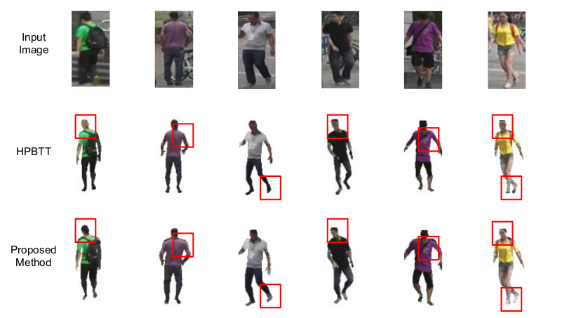

Abstract
Modelling the world in 3D has been a long standing problem in computer vision. A large variety of techniques exits for 3D modelling from a single image or a collection of images specific to different applications. Among them two widely used techniques are i) Structure-From-Motion (SFM) which reconstructs 3D point clouds of an environment from a collection of images, ii) modelling of a human subject in 3D from a single RGB image. In my thesis I have focused on mitigating some of current issues faced by these methods. I have proposed semi-supervised deep learning techniques which can utilise large volumes of un-annotated in-the-wild datasets to improve accuracy of existing 3D modelling techniques.
Finding point correspondences between images using local patch descriptors like SIFT is an essential step in reconstructing 3D using SFM. Currently CNN based descriptor models hold state-of-the-art performance in finding point correspondences. To further improve their the accuracy, we provide a framework to automatically generate pairs of similar and dissimilar patches from a large in-the-wild dataset(PS-Dataset) of image collections exhibiting wide variations in viewpoint and illumination.
The robustness of a descriptor to scale is largely attributed to normalising patches in terms of scale before computing its descriptors. However, in certain applications like dense matching of pixels between two images normalising patches is infeasible due to unavailability of scale information at every pixel. Hence, I propose a multi-resolution architecture CNN model to compute scale invariant descriptors without requiring any normalisation. We perform correspondence matching and 3D reconstruction on benchmark datasets using such non-normalized patches to demonstrate its efficacy.
In modelling humans from monocular images, current fully supervised methods requires large amounts 3D annotated images which are captured in indoor settings using sophisticated motion capture setups. Hence, these methods do not generalise well to in-the-wild settings. To this end, we propose a semi-supervised approach which can utilise multi-view images captured in the wild without requiring 3D annotations. In our approach, we jointly learn i) an embedding capturing 3D human pose from multi-view images using metric learning and ii) to estimate 3D joint locations from our embedding using little amount of 3D supervision.
To have a complete representation of a human subject digitally, a fully textured mesh model is essential. In this regard, we present a unsupervised framework that estimates textures of the human subject given a single RGB image and an estimated mesh. We enhance the efficacy of an existing framework that learn to generate textures by ensuring consistency between textures obtained from multiple images of the same subject during training. We achieve this by hierarchically refining the mesh such that its projection has a higher overlap with the human subject enabling higher consistency between textures.
We perform extensive experiments for all proposed methods on publicly available benchmark datasets and outperform corresponding competing methods.
Overview
Perceiving the world in 3D is essential for an autonomous robot for carrying out several tasks such as navigating, interacting with other people or objects, analysing structures and so on. Humans are excellent in estimating relative depth and 3D structure of contents in a scene through evolution. Achieving similar levels of accuracy through machines forms a fundamental problem in computer vision and is actively pursued in the community. A large variety of ongoing techniques for 3D reconstruction exist in the literature specific to different applications. For instance, the method of Structure-From-Motion (SFM), Simultaneous Localization And Mapping (SLAM) are used for reconstructing an entire environment while dedicated methods exploiting human structure exist for modelling people in 3D from images and videos. In my thesis, I have focused on mitigating some of the issues faced by current method solving SFM and monocular 3D Human modelling.
Contributions

Visual Map of my contributions
Visual Map of my contributions
I address the problem of exploiting massive unlabelled in-the-wild datasets for different learning frameworks pertaining to improve performance of 3D modelling of scenes and humans. My contributions span several aspects of learning from data,
- Create a dataset consisting of images of real world scenes. Automatically process the images to create training data with labels for the task at hand. These labels does not require manual interventions but uses off-the-shelf techniques along with other specific constraints. The generated labels at times can be noisy and suffer slight deviations from the ground truth. The large volume of datasets ensures the effect of such noisy labels are negligible.
- Design novel deep learning architecture to account for wide variations while learning specific tasks from real `in-the-wild' datasets.
- Adopt semi-supervised approaches where the model is jointly trained on large amounts in-the-wild unlabelled data and much smaller set of labelled data. The labelled data is required to supervise the model for task specific outputs(eg. predicting 3D body joint locations) while weak supervision/constraints are used learn from the unlabelled data. The quantity and in-the-wild variations in the unlabelled data enables the model to learn robust intermediate feature maps that can be applied in real world scenarios.
- Adopt un-supervised approaches where only weak constraints are used for learning. In this setting no annotations are required and are used in problems which even small amounts of ground truth labels are not available.
Applications
SFM Applications

Photo Tourism[1]: 3D modelling of popular sites and landscapes from large collection of photos from the internet. Augmented Reality[2]: Annotate images based on 3D structure. Structural Geology[3]: Images from Unmanned Aerial Vehicles (UAV) are used to reconstruct 3D surface for high fidelity surveys of trenches and rock exposures.
Human Modelling Applications

Markerless Motion Capture[4]: Capture human motions in free environments without markers, widely used for film making. Digital Avatar>[5]: Creating an animatable object representing the subject from a single RGB image. Interactive Applications[6]: Creating applications which can be used by body movements, e.g. Interactive Art.
PhotoSynth Dataset
To enhance the performance of CNN based descriptors, we introduce a novel dataset that overcomes many of the drawbacks of existing datasets used of training descriptors. We begin with collecting data from publicly available large collection of images from the internet which are taken in-the-wild and exhibit wide variations in content, viewpoints, scale and illumination. We use Microsoft PhotoSynth for this purpose. We collected 30 scenes with each scene comprising of a collection of around 250 images appx. Sample images from different are shown below,

Sample pairs of images from our proposed dataset showing viewpoint, scale and illumination variations
Next, we propose an automated way to process these image collections to generate pairs of ‘positive’ (similar) and ‘negative’ (dissimilar) patches that can be used to learn descriptors from patches through metric learning shown below,
Patches extracted by our algorithm centered around keypoints shown in green dots representing a unique 3D point in the scene.
We exploit the Structure From Motion process and its outputs to generate the desired data. Specifically, we perform SFM on each of the image collections using SIFT descriptors for point correspondences. The SFM process outputs i) reconstructed 3D points ii) set of corresponding 2D locations from images corresponding to each 3D point, ii) estimated intrinsic and extrinsic parameters. The transitivity relationship between point correspondences(i.e.a correspondence between pair of images (A, B) and (B,C) ensures correspondence between pairs (A, C)). This enables the SFM process to match corresponding points between pair (A, C) which would been otherwise unlikely to obtain when matched directly using SIFT descriptors. The set of corresponding 2D locations given a 3D point may contain images that are taken from very similar viewpoints and scale. We propose a novel algorithm to prune out these near duplicate entries from the set using estimated intrinsic and extrinsic camera parameters. Our pruning algorithm is also be used to customise the amount of variability between corresponding pairs in terms viewpoints and scale for different tasks. State-of-the-art descriptor learning frameworks trained on our proposed dataset outperform significantly those that are trained existing datasets on matching point correspondences. In the image below, we show patches matched by our model against others on the 'Fountain P-11' scene from Strecha et al which provides images with wide baselines. One can observe that our model outperforms others in matching corresponding patches differing in large viewpoints
Examples of incorrect matches made by Hardnet+ (Mishchuk et al. NeurIPS 2017) while matching very-wide image pairs from scene Fountain-P11. The top row represent the patches from the source image. The corresponding predictions are given in the same column. Incorrect and correct predictions are shown in red and green respectively
Scale Invariant Local Features
The CNN based descriptor models mentioned previously operates on patches which are normalised in terms of scale and rotation. As a consequence, the normalized patch ensures the descriptor computed are in turn invariant to scale and rotation. The normalisation requires 'scale' and 'dominant orientation' values which are evaluated by the keypoint detector and provided along with the location for each detected point. However, in certain applications like densely matching every pixel(not just keypoints) lying in the shared region between two images, the 'scale' and 'orientation' values are not available. To improve matching accuracy in such scenarios, we propose a multi-resolution CNN architecture to encode descriptors without requiring normalisation yet achieving invariance to scale. In this architecture, the network takes in patches cropped at 3 different resolutions centered around the same point and extracts feature maps using the same feature extractor, concatenates the features and finally encodes them into the output descriptor. Using features from patches cropped at different resolution helps in capturing information at different scales. Our proposed architecture trained on our novel dataset using metric learning outperforms competing methods when input patches are not normalized. We also demonstrate the superior SFM based 3D reconstruction on benchmark Strecha dataset when point correspondences are obtained using descriptors computed by our model on non-normalised patches in the following figure.

Comparing reconstruction obtained from SFM on the 'fountain' scene of Strecha dataset with different descriptors: SIFT, DeepDesc, Tfeat. DeepDesc and Tfeat are CNN based descriptors trained an existing dataset for descriptor learning. Our multi-resolution model trained on our proposed dataset obtains more no of point correspondences which leads to denser reconstructions indicated by a higher number of reconstructed points.
Semi Supervised Human Pose Estimation
We propose a semi-supervised approach which can jointly train a model on large unlabelled images of human motion along with a small set of 3D labelled images to estimate 3D body joint location from monocular RGB images. In our approach, we apply state-of-the art metric learning framework [10] used for learning patch descriptors on time-synchronized multi-view images to learn an embedding of images capturing implicit 3D structure without requiring labels. Time-synchronized multi-view images implies, image sets capturing poses from several viewpoints at every time instant from a video sequence of human motion. In our setting, 'anchor-positive' pair consist of images taken at the same time instant but from different viewpoints while a 'anchor-negative' pair has images taken at different time instants. Choosing the 'anchor, positive, negative' in such a way ensures discrimination between 'positive' and 'negative' is done on the basis of pose alone. To eliminate the possibility of the model discriminating a 'negative' based on subject appearance instead of pose we ensure the 'negative' belong to the same subject as that of the 'anchor'. Since the 'anchor' and 'positive' are images belonging to different viewpoints, our learned embedding are invariant to viewpoints. Metric learning ensures that in the learnt embedding space, euclidean distance is proportional to similarity in the 3D pose as shown below,
Distance between images with the same pose taken from different views (marked 'anchorpositive') and images having different pose(marked 'anchor-negative') in the embedding space learned by our model. Similar poses have a much smaller distance compared to dissimilar ones.
To estimate specific 3D joint locations from our embedding, a shallow network is trained using 3D supervision from annotations is trained on a small set of images. Typically the annotations of the body joints are available in the local camera coordinate system which differ between viewpoints. Estimating joint locations in the local camera co-ordinate system from our view invariant pose embedding hence becomes one-many mapping which makes learning infeasible. To this end, we construct a new canonical representation of the human pose which is rotation invariant and estimate joint locations in this novel representation.
In our experiments, we follow previous works in mimicking the scenario of leveraging large no. of unlabelled images with a small fraction of labelled images on the Human3.6M dataset. We split the dataset into labelled and unlabelled parts and progressively reduce the set of labelled images. We demonstrate that the accuracy of our proposed learning framework degrades to a much smaller extent compared to other approaches when 3D supervision is extremely limited (shown in images below).
N-MPJPE 3D-pose supervision on test split of Human3.6M. Our proposed model outperforms the baseline and the current state-of-the-art Rhodin et al. ECCV 2018.

Qualitative results on canonical pose estimation by our proposed framework (MCSS) against our Baseline on Human 3.6M test split. Both the models are trained with limited 3D supervision. Our method produces more accurate estimates for even for challenging poses like 'sitting' and 'bending'.
Unsupervised Human Texture Synthesis
In certain applications, along with of pose estimation, recovering a mesh capturing the shape of the person with detailed textures are desired. Estimating textures from a single image of the subject taken in the wild (shown in the image below) increases the scope of applications drastically.
Estimation of textured mesh capturing shape, pose and appearance from a single RGB image.
Recently, unsupervised approaches have been proposed in Wang et al. CVPR 2019 and Zhao et al. NeurIPS 2020, learn to estimate textures from images of the subjects taken in the wild without requiring ground truth textures. These methods given an RGB image of the subject and a corresponding SMPL mesh, estimate a texture map corresponding to mesh. Comparing the input RGB image and a rendered image using the mesh and the estimated textures is used in learning. The SMPL meshes are obtained from an off-the-shelf predictor. The meshes being naked body models does not capture shape deformations due to clothing. Furthermore, errors in prediction results in incorrect representation of shape and pose. We demonstrate that refining the initial predicted shape and pose to capture clothing deformations improves the efficacy of the unsupervised methods.
We extend the unsupervised framework presented in Zhao et al. NeurIPS 2020 for generating full body textures from a single RGB image. We refine the initial predicted SMPL mesh to capture shape deformation due to clothing, ensuring a better match with the foreground human silhouette. We deform the meshes in an hierarchical fashion in 2 stages using the method proposed in Zhu et al. CVPR 2019. In the first stage 3D displacement vectors for joints are predicted such that after incorporating the displacements their projections align with of the corresponding actual 2D joint locations. In the next stage, we displacement vectors to uniformly sampled points on the mesh surface is predicted such that the projection of the displaced points lies on the human silhouette boundary. An additional re-identification based similarity loss along with the perceptual loss is also applied. We show that the re-identification loss helps in generating texture maps which are more consistent real world images specially in body part boundaries. Qualitative comparisons between images rendered using textures estimated by Zhou et al and our model (shown in image below) demostrates higher consistency of textures between the images rendered by our model and GT images specially in pheripheral regions of the human subjects.

Qualitative comparisons with HPBTT (Zhou et al. NeurIPS 2020). Our method estimates more accurate textures in regions around the silhouette boundary indicated in red boxes.
List of Publications
- R. Mitra, J. Zhang, S. Narayan, S. Ahmed, S. Chandran, A. Jain, Improved Descriptors for Patch Matching and Reconstruction, in proceedings of ICCV Workshop on Compact and Efficient Feature Representation and Learning (CEFRL) (ICCV Workshop 2017), Venice, October 2017. Link
- R. Mitra, N. Doiphode, U. Gautam, S. Narayan, S. Ahmed, S. Chandran, A. Jain, A Large Dataset for Improving Patch Matching, in (arXiv e-prints 2017). Project Page
- N. Doiphode, R. Mitra, S. Ahmed, A. Jain, An Improved Learning Framework for Covariant Local Feature Detection in proceedings of Asian Conference on Computer Vision (ACCV 2018), Perth, December 2018. Link
- N. B. Gundavarapu, D. Srivastava, R. Mitra, A. Sharma, A. Jain, Structured Aleatoric Uncertainty in Human Pose Estimation in proceedings of CVPR Workshop on Uncertainty and Robustness in Deep Visual Learning (CVPR Workshop 2019), Long Beach, June 2019. Link
- R. Dabral, N. B. Gundavarapu, R. Mitra, A. Sharma, G. Ramakrishnan, A. Jain, Multi-Person 3D Human Pose Estimation from Monocular Images in proceedings of International Conference on 3D Vision (3DV 2019), Québec City, September 2019. Link
- R. Mitra, N. B. Gundavarapu, A. Sharma, A. Jain, Multiview-Consistent Semi-Supervised Learning for 3D Human Pose Estimation in proceedings of Conference on Computer Vision and Pattern Recognition (CVPR 2020), Seattle, June 2020. Link